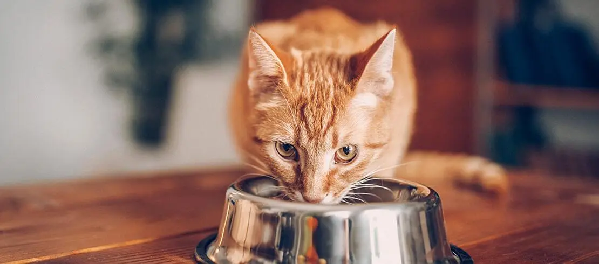
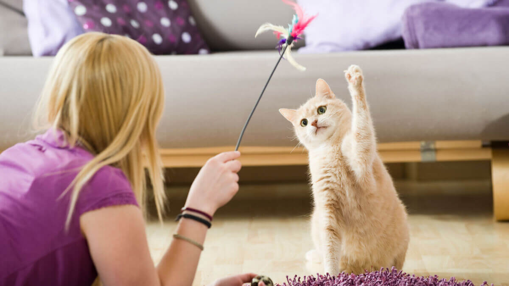

Bem-vindo ao Mundo dos Gatos!
Descubra tudo sobre os nossos felinos! Aqui, você encontrará informações úteis sobre cuidados, raças, saúde, adestramento e muito mais. Nosso objetivo é ajudar você a entender melhor e cuidar do seu gato.
Cuidados essenciais com o seu pet


Guia de Cuidados Domésticos
Cuidar de um gato em casa envolve diversas responsabilidades que garantem o bem-estar, a saúde e a felicidade do seu amigo felino. Aqui está um guia detalhado para ajudar você a proporcionar os melhores cuidados para o seu gato:

Nutrição
A nutrição é crucial para a saúde do seu gato. Forneça uma dieta equilibrada, rica em proteínas e nutrientes essenciais para garantir uma vida longa e saudável. Lembre-se de escolher alimentos apropriados para a idade e condição do seu felino, evitando sempre alimentos tóxicos como chocolate, cebolas e uvas.
Higiene

A higiene do seu gato é essencial para sua saúde. Escove o pelo regularmente, principalmente se o seu gato tiver pelos longos. Além disso, é importante manter a caixa de areia limpa e proporcionar banhos apenas quando necessário, utilizando produtos específicos para felinos.
Atividade
Gatos precisam de estímulos físicos e mentais para se manterem saudáveis. Brinquedos, arranhadores e períodos de brincadeira ativa são essenciais para o bem-estar do seu felino. Certifique-se de que o seu gato tenha um ambiente estimulante, com lugares para escalar, explorar e descansar.